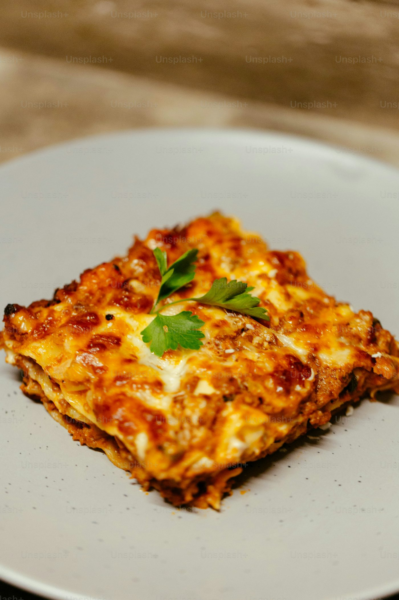

Lasagna Recipe

Home-made lasagna.
To make delicious Home-made lasagna like the one in the photo, you will need to follow the recipe
to the brim!
Ingredients
Make sure to include ALL Ingredients
- Meat
- Onion
- Canned Tomatoes
- Fresh Herbs
- Sugar
- Spices and Seasoning
- Noodles
- Cheese
- Eggs
Steps to Make Lasagna
To make Lasagna, you will need to;
- Cook the meat:Cook the ground meat in a skillet until browned and crumbly. Add the onion and continue cooking until it's translucent.
Stir in the canned tomato products, half of the parsley, garlic, basil, 1.5 teaspoons of salt, oregano, and sugar.
- Cook the noodles:Boil the lasagna noodles in lightly salted water until they're al dente.
- Make the cheese layer:Mix cottage cheese, Parmesan cheese, eggs, the remaining parsley, the remaining salt, and pepper in a bowl.
- Assemble the lasagna:Layer the ingredients according to the recipe (starting with sauce and ending with mozzarella) until the lasagna is assembled.
- Bake the lasagna:Cover with foil and bake in the preheated oven for about half an hour. Remove the foil and continue baking until the top is golden brown.